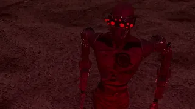
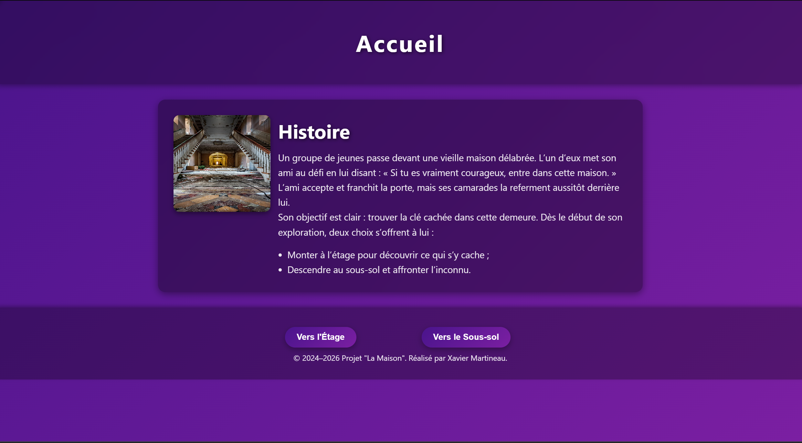
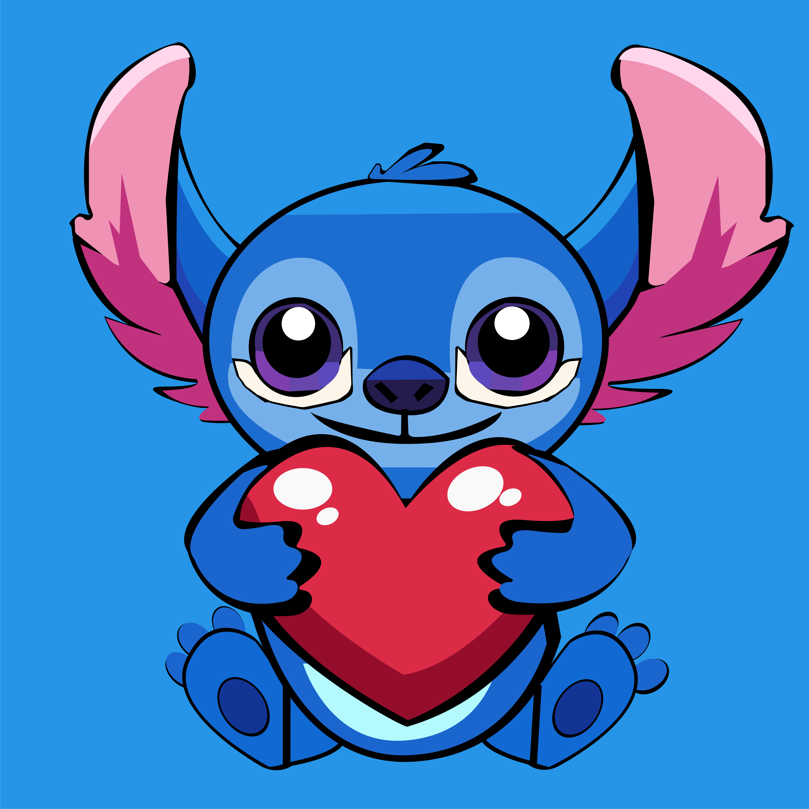

Portfolio de Xavier Martineau
Je construis des expériences
qui marquent les esprits.
Spécialisé en interfaces haute performance, systèmes distribués et intégration IA. Chaque projet est conçu pour être le meilleur de sa catégorie.
Disponible pour de nouveaux projets
4+
Années d'expérience
40+
Projets livrés
// Projets en vedette
Mes meilleures réalisations
Voir tout →

Animation & 3D
Un générique de fin plongé dans une ambiance sombre, teintée de rouge, où chaque élément renforce la tension et la dernière note dramatique de l’histoire.
3D
Animation
MAYA
Rendu

La Maison
On est enfermé dans une maison mystérieuse, et pour réussir à en sortir, il faut explorer les différents chemins qui s’offrent à nous et faire les bons choix.
Web
UX/UI
Design
Responsive

Stitch
Un dessin vectoriel de Stitch, aux couleurs vives et aux lignes nettes, tenant un grand cœur rouge avec un regard doux et expressif.
Vectoriel
Illustration
Couleur
Composition